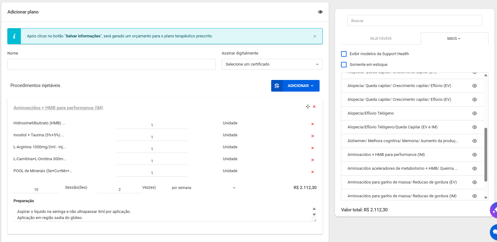
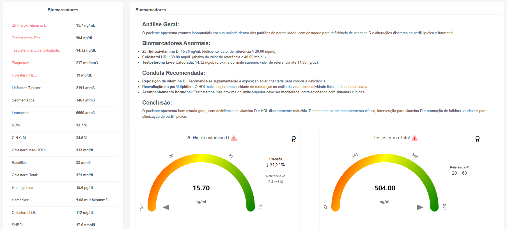

Organize a sua rotina com o software de gestão e registo clínico eletrónico especializado. Otimize até 40% do seu tempo operacional para focar no que realmente importa: o seu paciente.
Ganhe acesso instantâneo a **centenas de protocolos prontos**, estruturados detalhadamente com a composição recomendada, insumos necessários e vias de aplicação (intramuscular, endovenosa ou intradérmica).

Diga adeus às digitações cansativas durante as consultas. Nossa IA analisa e transcreve a anamnese automaticamente, gerando sugestão de receitas, exames e dietas de forma instantânea.
Paciente relata dor de cabeça persistente durante todo o dia, acompanhada de náusea, sem alívio com medidas habituais.
A cefaleia iniciou-se no mesmo dia da consulta, com intensidade significativa e sem resposta a intervenções caseiras. A dor é contínua e impacta negativamente o bem-estar.
Refere sedentarismo, ausência de prática de exercícios físicos e padrão alimentar inadequado, com consumo frequente de fast-food (McDonald's, Burger King).
Revolução na interpretação de exames laboratoriais, desenvolvido para levar agilidade ao atendimento clínico, o Support Lab interpreta exames laboratoriais em segundos utilizando a Inteligência Artificial.

Estruture e automatize os bastidores financeiros, stocks e orçamentos do consultório.
Importe os ficheiros XML das faturas emitidas pelos seus fornecedores. O sistema realiza as entradas por lotes, distribui as quantidades e as respetivas datas de validade de forma automatizada.
Assim que um plano de injetáveis é vendido, a ordem de aplicação é enviada para o painel de enfermagem. Ao finalizar o procedimento, o sistema dá baixa imediata nos produtos utilizados no stock.
A sua equipa médica e operacional ganha acesso a uma plataforma exclusiva de ensino, reunindo mais de 2.500 horas de palestras científicas e atualizações para resguardar a qualidade técnica.
Treinamos toda a sua equipa (Receção, Financeiro, Médicos e Enfermagem) por videoconferência com acompanhamento personalizado para garantir uma transição suave do seu sistema anterior.
Especialista em negócios @grupotgpm
Palestrante @supporthealthbrasil
Mais de 3.000 clínicas licenciadas por mim!
WhatsApp: +55 31 8919-6026